← 返回阅读库 · 原论文目录
论文讲解阅读文档 · 表征学习 · v178
Rethinking Pre-training and Self-training[2006.06882]
视频时长 00:08:21；讲解文字 3,746 字符；提取讲解画面 19 张。按视频原顺序阅读，每段文字保留时间戳。
文字来自整段视频的自动语音转写，按自然停顿分段，并与 PPT / 论文页面 / 演示画面对齐。未将讲解压缩为摘要；术语、数字和口述公式请结合画面及原论文核对。 阅读稿已校正规范部分明确术语误识别；原始逐字稿和每处修改记录另行保留。
讲解画面为源视频截图（640×360），不是可编辑 PPT 文件。全片按每秒 2 帧扫描内容变化，逐步展开页保留；连续动画保留代表画面。清晰度受源视频限制。
下载完整资料包 · 含离线 HTML、PDF、Word、全部 PPT 画面和字幕。
原论文与材料
Rethinking Pre-training and Self-training · 下载完整 PDF（20 页）
按时间阅读
00:00:00–00:00:58 · 画面 001
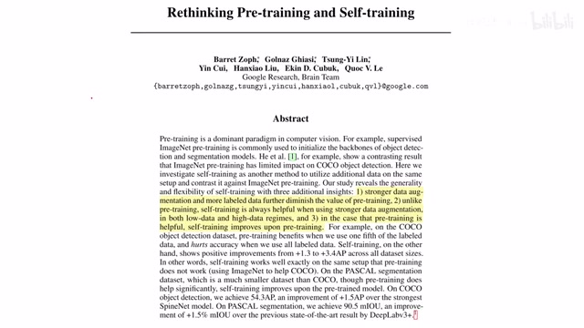
00:00:00–00:00:58 · 画面 001大家好,今天我们来迅速说一篇论文 Rethinking Pre-training and Self-training，这篇论文主要研究了在更强的数据增强的这些情况下，我们的 Pre-training 和 Self-training 它们的表现。那么作者通过实验发现在我们使用更强的数据增强策略之后，甚至说使用了更多有标记过的样本之后，结果我们的 Pre-training 它的优势反而就没有那么明显了，甚至会影响最后模型的表现而和 pre-training 不一样呢，self-training 也就是说我用另一个训练好的网络，它生成一些伪的标记结果呢，在使用更强的数据增强的方法下，它依然能够帮助我们的模型性能提升。那么除此之外呢，在 pre-training 能够改善我们的模型性能的时候，self-training 呢也可以改善模型性能好的。那么以上就是本文得到的主要结论，那感谢您的收看，再见
00:00:58–00:00:59 · 画面 002
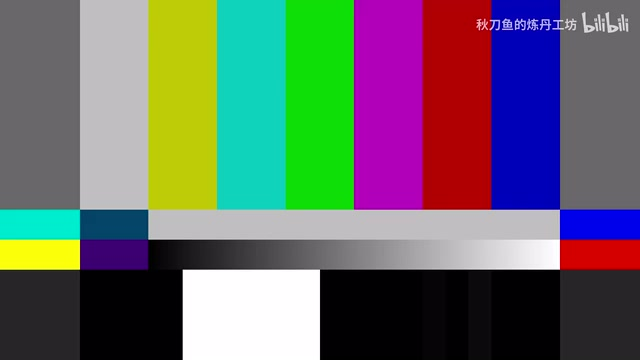
00:00:58–00:00:59 · 画面 00200:00:59–00:01:16 · 画面 003
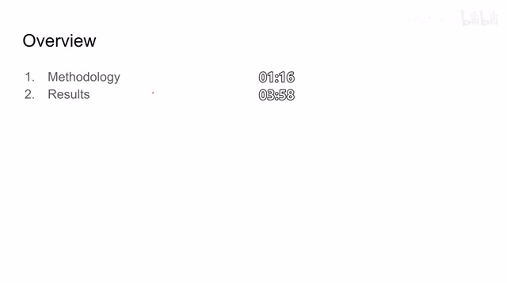
00:00:59–00:01:16 · 画面 003那么在这个视频里面呢，我们就是主要介绍一下作者通过怎么样的实验方法来得到了之前上述的一些逻辑，然后呢展示一下作者的实验结果。作者也汇报了很多实验的细节，如果你对这个方向感兴趣，那非常推荐你去到原文中查看。首先是 pre-training 这里呢，我们的所有实验都是用了这个 EfficientNet B7 这个作为我们的 base line。那么 pre-training 的 checkpoint 呢，作者呢这里使用了两个模型，一个是
00:01:16–00:02:29 · 画面 004
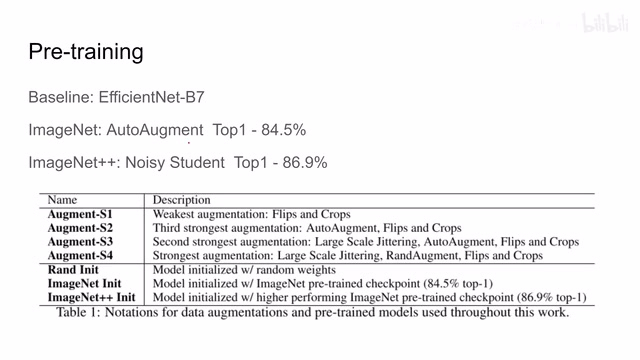
00:01:16–00:02:29 · 画面 004一个是被称为 ImageNet 这个是使用 AutoAugment 加上我们上面的模型在 Top1 能达到 84.5%的准确率那么另一个是 ImageNet++使用的是 NoisyStudent 这个方法那么也是上面的网络那么在 Top1 能达到 86.9%的准确率那么与之相对的就是 Random Initialization 然后就是作者研究的我是使用更强的图像的增广的策略那么这里的 s1 就是最简单的翻转还有切块等等那么 s2 就是增加了 AutoAugment 那么 s3 是在 s2 的基础上把我原来的 scale 缩放的这些东西来变得尺度更大了比如说原来是从 0.8 到 1.2 倍的缩放我现在变到了 0.5 到 2.0 倍的缩放那么最强的 s4 是使用了 RandAugment
好的，那么介绍 augmentation 和这个 pre-training 的配置，我们来看 self-trainingself-training 的思想呢就是我先训练一个 teacher modelteacher model 呢它在我们的样本上产生一些 pseudo-labels，也就是伪的标签。我们就把这些标签呢作为 ground truth，然后呢我们的这个 student model 同时学习人类的这个给的标记还有这些 pseudo-labels，他们是一同来进行学习的
00:02:29–00:03:26 · 画面 005
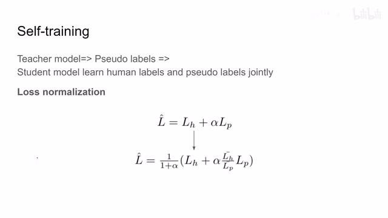
00:02:29–00:03:26 · 画面 005那么在构建 loss 的时候呢，作者发现我原来如果使用这种直接的把两个 loss 加起来这个 lh 表示 human 的人类标记的产生的 losslp 呢表示表示呢是 teacher network 给的这个 pseudo-labels 它的标记呢产生的 loss。那么这 alpha 呢就是 hyper parameter 来控制它们两个的 trade off 嘛。那么作者发现呢我如果单纯使用这种简单的这种 loss 它是在后面很容易就爆炸了，不是那么的稳定那么于是呢，作者提出来是这个 loss normalization，就是他新构建的 loss 呢是这个样子的。这里呢这个 LH 拔和这个 LP 拔就是这个 LH 和 LP 他们使用指数倍的这个平滑之后得到的这个结果。所谓的指数的平滑呢就是像 momentum 一样，我每次更新它的时候呢是有一定比例的新 loss 加上一定比例的旧 loss 这样做的一个平滑
00:03:26–00:03:27 · 画面 006
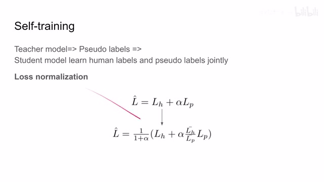
00:03:26–00:03:27 · 画面 00600:03:27–00:03:58 · 画面 007
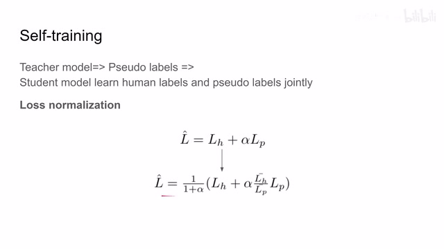
00:03:27–00:03:58 · 画面 007那么这里作者也尝试了不同的α值对模型性能的影响，这个在附录里面大家可以去查看。好的，那么我们直接看到作者的主要的结果。首先作者探讨了使用不同的 Data Augmentation 还有标记的样本的数量会对我们的 Pre-training 产生什么样的影响。那么得到的结论是我们如果使用了很强的 Data Augmentation，那么我们的 Pre-training 实际上会使我们的表现下降
00:03:58–00:04:44 · 画面 008
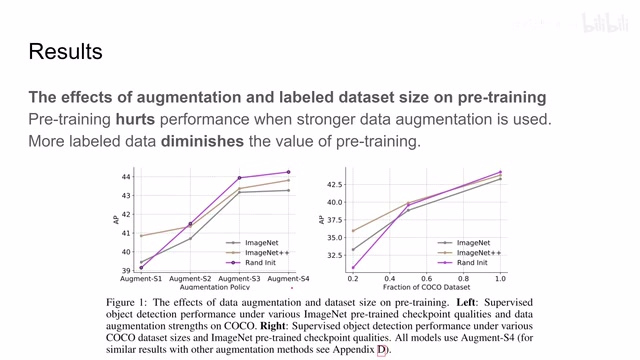
00:03:58–00:04:44 · 画面 008同时我如果使用更多的有标记的样本，那么 Pretraining 的效果也会下降。看到左边这里 S1 到 S4 我们使用的数据增强策略是逐渐变强的。可以看到一开始 Pretraining 的模型还是比 Random Initialization 要好的，但是随着我们图像增强的越来越强，抖动越来越大，结果它的结果就不如 Random Initialization 了
00:04:44–00:04:45 · 画面 009
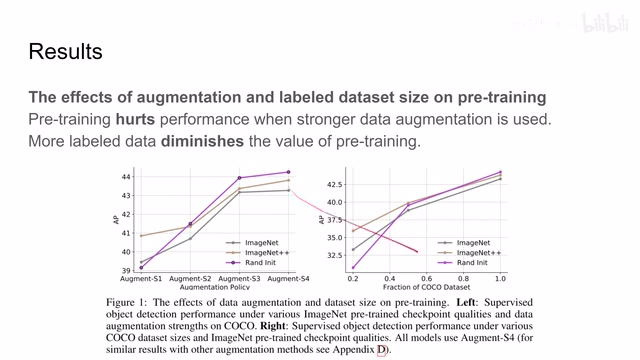
00:04:44–00:04:45 · 画面 00900:04:45–00:05:03 · 画面 010
00:04:45–00:05:03 · 画面 010那么右边这里我们看到是使用 coco data set，它的样本的比例 20%的时候，这些 pre-training 还是比 random initialization 要好的，但是随着使用标记样本越来越增加，最后 random initialization 结果比这些 pre-training 要好很多。那么随后作者就开始研究 data augmentation 还有 label data set size 对于 self-training 它的影响。
00:05:03–00:05:04 · 画面 011
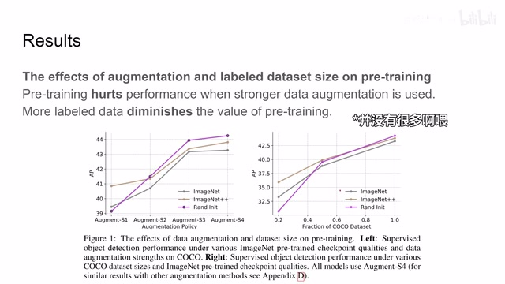
00:05:03–00:05:04 · 画面 01100:05:04–00:05:38 · 画面 012
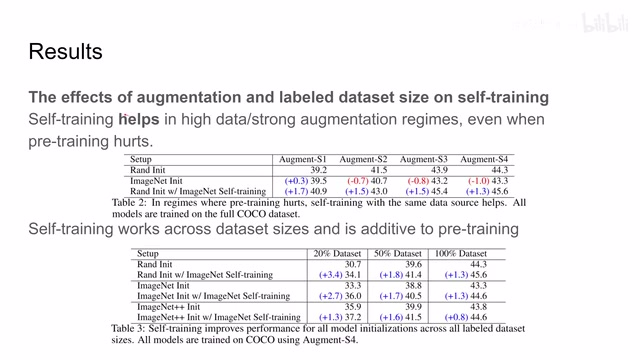
00:05:04–00:05:38 · 画面 012作者发现呢 self training 可以帮助我们在使用更强的 data augmentation 的时候获得一个好的结果甚至是在 pre training 它影响性能的时候那么我们可以看到这一组表格使用 self training 呢它是始终会比 random initialization 要强的同时呢对于加大有 label 的这个数据集 self training 呢不仅比原来的 random initialization 要好甚至呢也可以改变从 pre training 产生的这个 model 它们的结果
00:05:38–00:05:39 · 画面 013
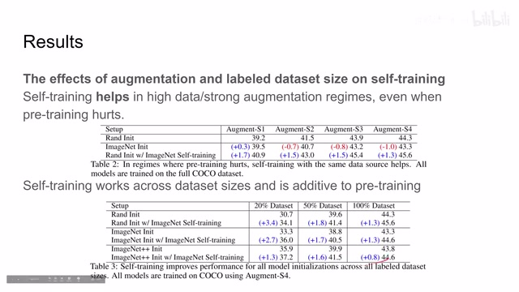
00:05:38–00:05:39 · 画面 01300:05:39–00:05:40 · 画面 014
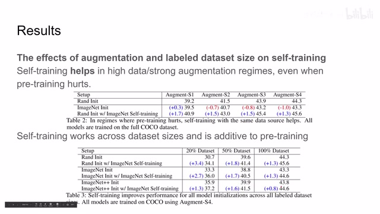
00:05:39–00:05:40 · 画面 014那么之后呢，作者还讨论了说，我原来的 pre-training 是有 label 的是 supervised 的方法，我如果使用 self-supervised 的 pre-training 呢，那么一样的结果呢，发现即便我使用 self-supervised 的 pre-training 不给它 label，那么当我们使用更强的图像增强数据增强的策略的时候呢，一样也是会影响我们的性能，但是呢，self-training 就不会。那么以上呢就是支撑本文主要结论的数据来源。
00:05:40–00:06:09 · 画面 015
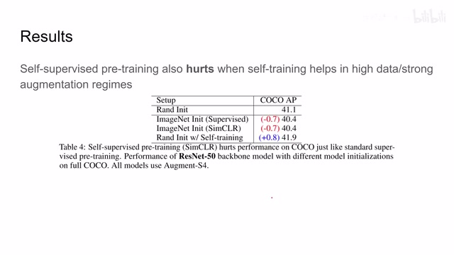
00:05:40–00:06:09 · 画面 01500:06:09–00:06:49 · 画面 016
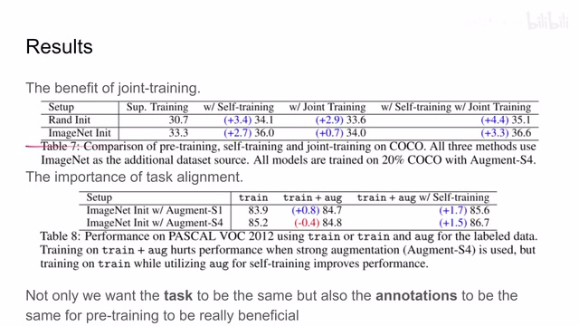
00:06:09–00:06:49 · 画面 016那么此外呢，作者还探讨了这个 joint training。那么作者认为呢，为什么 self training 这么强，是因为呢，他把这个 supervised 的 label 和这个 teacher model 给的我们的 pseudo-label 一起联合起来训练。这样子呢，我们的 student model 呢能够意识到这两个 label 他们之间的区别，能够更好的学习。那么这里呢，作者就想了，我能不能把 coco 和 ImageNet。
一起来训练，然后希望这个模型能够学到他们之间的这个差异呢。这里呢，实验我们看到这个使用这个 Joint Training 之后呢，性能有提升，而且呢，我们使用 Joint Training 加 Self Training 呢可以做得更好。那么此外呢，作者还研究了 Task Alignment 它的这个重要性，像这组实验呢是在 Pascal VOC 的这个 Training 这个 Data Set 上。
00:06:49–00:06:50 · 画面 017
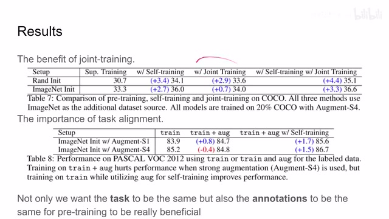
00:06:49–00:06:50 · 画面 01700:06:50–00:08:20 · 画面 018
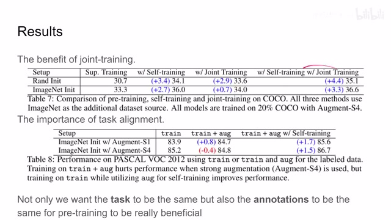
00:06:50–00:08:20 · 画面 018那么这一组呢是 training 加这个 aug，那么这个 aug 呢，它的标记呢可能会比这个 training 有更多的错误在里面。结果呢发现，当我们使用这个很强的 augmentation 的时候，我使用更多的这个有标记的样本呢，training 的性能呢反而变差了。这个呢我们在之前的实验中已经观察过这个现象。这个时候呢，作者试了 training 呢，我使用 supervised 的方法，这个 aug 这个数据集呢，我使用这个 self training 的方法。
来去克服人标记样本的这些错误。那么这样呢，无论在哪一种 data augmentation 的情况下，我们的性能呢都得到了提升。那么这里呢，也有另外的汇报说，在 open images 上面做 pretraining 会影响在 coco 上面的性能，哪怕这两个数据集他们的标记的方式是一样的。所以说呢，这里作者认为我们如果真的想要 pretraining 能够 work 的话，我们不仅需要两个数据集它的任务。
是一致的同时呢，他们的标记方法也要一致。好的，那么以上就是这篇文章的主要的实验内容了。那么这篇文章的核心呢，就是作者使用了很多算力帮我们刷新了对 self training 和 pre training 他们的认识。那么更多有趣的实验呢，欢迎大家去查看论文原文还有他的附录里面提供的这些材料。那么感谢您的收看，再见。
00:08:20–00:08:21 · 画面 019
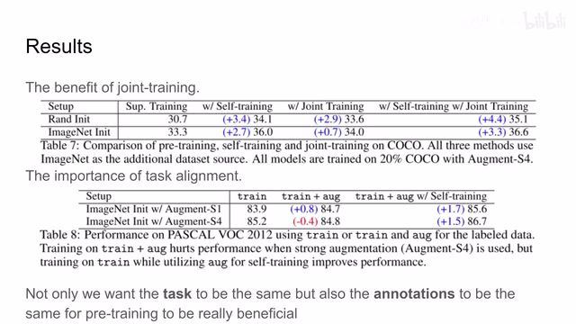
00:08:20–00:08:21 · 画面 019转写与来源说明 · 0 个自动复核提示
保留 18 个原始语音片段，0 个片段触发自动复核提示。提示仅用于定位可能的术语、重复或识别问题，不等于已确认错误。
讲解画面为源视频截图（640×360），不是可编辑 PPT 文件。全片按每秒 2 帧扫描内容变化，逐步展开页保留；连续动画保留代表画面。清晰度受源视频限制。
原视频：paper/合集_2026-10-16_表征学习/[论文简析]Rethinking Pre-training and Self-training[2006.06882].mp4
SHA-256：075a5f4c5d97bdcbd4d2dcad8315643d5ae89f31cbc0c84670ce39f8e7df7747
全文按视频语音与画面制作。原论文可从上方链接下载；完整资料包保留全文、原始逐字稿、字幕和校对记录。